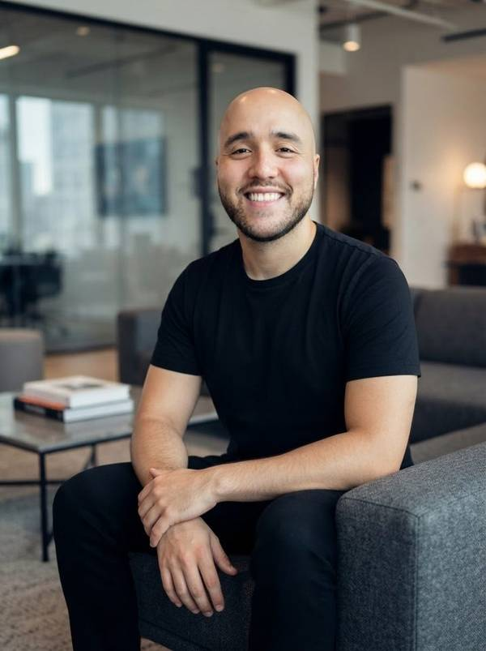

Vendas
Formar quem vende
- Formação do time comercial
- Discurso de valor, não de preço
- Roteiros e follow-up
Com IA
SDR e assistente de follow-up
Marketing, vendas e gestão para o seu polo.Automações, agentes e inteligência artificial trabalhando com a sua equipe, num modelo rentável, escalável e produtivo.
Quem trabalha em polo reconhece cada uma.
Chega da campanha nacional e só quer saber o preço.
Muito lead para pouca gente. Quem espera, esfria.
Uma resposta sem rumo e o lead some do WhatsApp.
Ninguém sabe como reaquecer quem parou de responder.
O aluno não entende tudo o que está levando.
O discurso é só preço. O diferencial não aparece.
Ninguém sabe com quantos leads precisa falar por dia.
Depois da matrícula, o polo some e não acompanha a evasão.
Ele cancela antes de concluir, e o polo perde meses de receita.
A inteligência artificial não é um produto à parte. É o que faz cada frente render mais.
Vendas
SDR e assistente de follow-up
Marketing
Campanhas aderentes à sua região
Gestão
Gestão prática, guiada pela rentabilidade do polo
Ferramentas que trabalham com a sua equipe todos os dias.
Coloque os números do seu polo.
Visão do gestor e do supervisor
Meta de matrículas do ciclo, por produto
Meta do polo no ciclo: 120 matrículas
Visão de cada consultor
No ciclo: 15 de graduação · 10 de pós · 5 de técnicos e outros
Simulação. No diagnóstico, a meta é construída com o seu time.
Cada entrega parte da sua marca, dos seus produtos, da sua região e do ticket médio do seu público.
A captação acontece em todos os meses do ano, não só nos períodos de campanha. É isso que dá ao polo uma rentabilidade estruturada.

Quem está à frente
Mais de 15 anos dentro dos grandes grupos educacionais. Agora, a serviço do seu polo.
Marcas que fazem parte desta história
Leva 2 minutos. Depois do envio, agendamos uma conversa para apresentar um plano de ação para o seu polo.